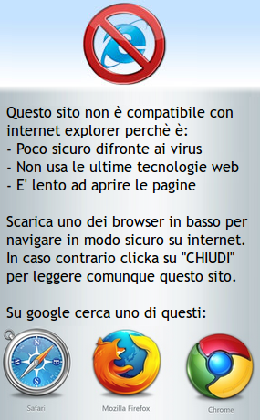

<!DOCTYPE html>
<!--
anti-msie (jQuery Popup)
    Copyright (C) 2012  PTKDev

    This program is free software: you can redistribute it and/or modify
    it under the terms of the GNU Affero General Public License as published by
    the Free Software Foundation, either version 3 of the License, or
    (at your option) any later version.

    This program is distributed in the hope that it will be useful,
    but WITHOUT ANY WARRANTY; without even the implied warranty of
    MERCHANTABILITY or FITNESS FOR A PARTICULAR PURPOSE.  See the
    GNU Affero General Public License for more details.

    You should have received a copy of the GNU Affero General Public License
    along with this program.  If not, see <http://www.gnu.org/licenses/>.
-->
<html>
    <head>
        <title>anti-msie</title>
		<link href="./css/jquery.mobile-1.2.0.min.css" rel="stylesheet" />
		<script src="./js/jquery.js"></script>
		<script src="./js/jquery.mobile-1.2.0.min.js"></script>
    </head>
<body>
		<!--[if IE]>
			<div id="anti-msie" data-role="popup" data-history="false" >
				<p><br /><p>
			</div>
			<script type="text/javascript" language="JavaScript">
				$("#anti-msie").css("width", "300px");
				$("#anti-msie").css("height", "480px");
				$(":jqmData(role='page'):last").on("pageshow", function(event) {
				  $("#anti-msie", $(this)).popup("open");
				});
			</script>
		<![endif]-->
</body></html>
